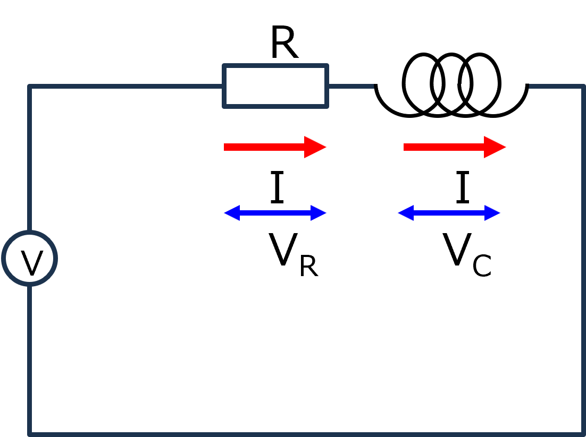
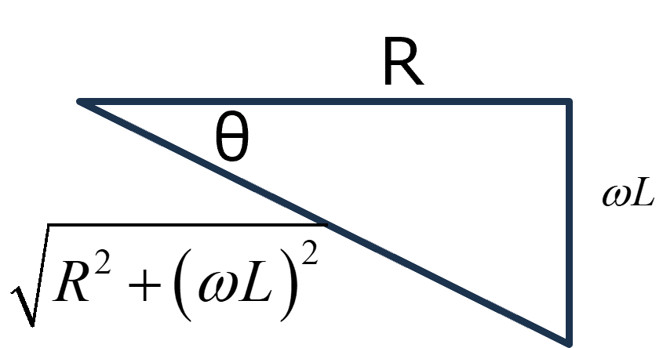

回路-10-3
RL直列回路をラプラス変換で真面目に解く

RとLが直列に並んだ交流回路をラプラス変換でまじめに考えます．式は，
\(\Large R \cdot I(t) + \displaystyle L \frac{d \ I(t)}{ dt} = V_0 \cdot e^{ j \omega t} \)
ラプラス変換を行うと，
\(\Large \displaystyle R \cdot F(s) + L \ \{sF(s)-I(0)\} =V_0 \cdot \frac{1}{s - j \omega} \)
I(0)=0，なので，
\(\Large \displaystyle R \cdot F(s) + L \ sF(s) =V_0 \cdot \frac{1}{s - j \omega} \)
\(\Large \displaystyle F(s) = \frac{1}{R+Ls} \cdot V_0 \cdot \frac{1}{s - j \omega} \)
\(\Large \displaystyle \frac{1}{R+Ls} \cdot \frac{1}{s - j \omega} = \frac{A}{R+Ls} + \frac{B}{s - j \omega}\)
\(\Large \displaystyle = \frac{A(s - j \omega)+B(R+Ls)}{(s - j \omega)(R+Ls)} \)
\(\Large \displaystyle = \frac{s(A + BL)+BR- j A \omega}{(s - j \omega)(R+Ls)} \)
\(\Large \displaystyle B = -\frac{A}{L} \rightarrow -\frac{A}{L}R-j A \omega=1 \)
\(\Large \displaystyle A = - \frac{1}{\frac{R}{L}+ j \omega} = - \frac{L}{R+ j \omega L} \)
\(\Large \displaystyle B = \frac{1}{R+ j \omega L} \)
したがって，
\(\Large \displaystyle F(s) = V_0 \cdot \left[ - \frac{L}{R+ j \omega L} \frac{1}{R+Ls} + \frac{1}{R+ j \omega L} \frac{1}{s - j \omega} \right] \)
\(\Large \displaystyle = V_0 \cdot \frac{1}{R+ j \omega L} \left[ \frac{1}{s - j \omega} - \frac{1}{\frac{R}{L}+s} \right] \)
逆ラプラス変換を行うと，
\(\Large \displaystyle I(t) = V_0 \cdot \frac{1}{R+ j \omega L} \left[ e^{j \omega t} - e^{-\frac{R}{L} t} \right] \)
\(\Large \displaystyle = V_0 \cdot \frac{R- j \omega L}{R^2 + (\omega L)^2} \left[ e^{j \omega t} - e^{-\frac{R}{L} t} \right] \)
\(\Large \displaystyle = V_0 \cdot \frac{R- j \omega L}{R^2 + (\omega L)^2} \left[ e^{j \omega t} - e^{-\frac{R}{L} t} \right] \)
後の展開は同じですが，きちんと書くと，
\(\Large \displaystyle I(t) = V_0 \cdot \frac{R - j \omega L}{R^2 + (\omega L)^2 } \frac{\sqrt{R^2 + (\omega L)^2}}{\sqrt{R^2 + (\omega L)^2} }\cdot \left( e^{ j \omega t} - e^{- \frac{R}{ L} t} \right) \)
\(\Large \displaystyle I(t) = V_0 \cdot \frac{R - j \omega L}{\sqrt{R^2 + (\omega L)^2} } \frac{1}{\sqrt{R^2 + (\omega L)^2} }\cdot \left( e^{ j \omega t} - e^{- \frac{R}{ L} t} \right) \)
とし，最初の項を，複素平面で，

と考えると，
\(\Large cos \ (-\theta) = \displaystyle \frac{R }{\sqrt{R^2 + (\omega L)^2 }} \)
\(\Large j \ sin \ (-\theta) = - \frac{ \displaystyle j \omega L}{\sqrt{R^2 + (\omega L)^2 }} \)
となるので，
\(\Large \frac{R - j \omega L}{\sqrt{R^2 + (\omega L)^2 }} = cos \ (-\theta) - j \ sin \ (-\theta) = e^{-j \ \theta} \)
となります．ここで，
\(\Large tan (-\theta) = \displaystyle \frac{\omega L}{R} \)
です．したがって，電流は，
\(\Large \displaystyle I(t) = V_0 \cdot e^{ -j \theta} \cdot \frac{1}{\sqrt{R^2 + (\omega L)^2} }\cdot \left( e^{ j \omega t} - e^{- \frac{R}{ L} t} \right) \)
\(\Large \displaystyle = V_0 \cdot \frac{1}{\sqrt{R^2 + (\omega L)^2} }\cdot \left( e^{ j (\omega t - \theta)} - e^{ -j \theta} \cdot e^{- \frac{R}{ L} t} \right) \)
\(\Large \displaystyle = V_0 \cdot \frac{1}{\sqrt{R^2 + (\omega L)^2} }\cdot e^{ j (\omega t - \theta)} - V_0 \cdot \frac{1}{\sqrt{R^2 + (\omega L)^2} }\cdot e^{ -j \theta} \cdot e^{- \frac{R}{ L} t} \)
となります．ここで，三角関数に戻すために，虚数部分のみ取り出すと，
\(\Large \displaystyle Im [ I(t) ] = Im \left[V_0 \cdot \frac{1}{\sqrt{R^2 + (\omega L)^2} }\cdot e^{ j (\omega t - \theta)} \right]
- Im \left[V_0 \cdot \frac{1}{\sqrt{R^2 + (\omega L)^2} }\cdot e^{ -j \theta} \cdot e^{- \frac{R}{ L} t} \right] \)
\(\Large \displaystyle = V_0 \cdot \frac{1}{\sqrt{R^2 + (\omega L)^2} }\cdot sin (\omega t - \theta)
- V_0 \cdot \frac{1}{\sqrt{R^2 + (\omega L)^2} }\cdot sin\ \theta \cdot e^{- \frac{R}{ L} t} \)
十分な時間が経てば，第二項は0となるので，
\(\Large \displaystyle I(t) \sim V_0 \cdot \frac{1}{\sqrt{R^2 + (\omega L)^2} }\cdot sin (\omega t - \theta) \)
となり，インピーダンスを用いた結果と一致します．